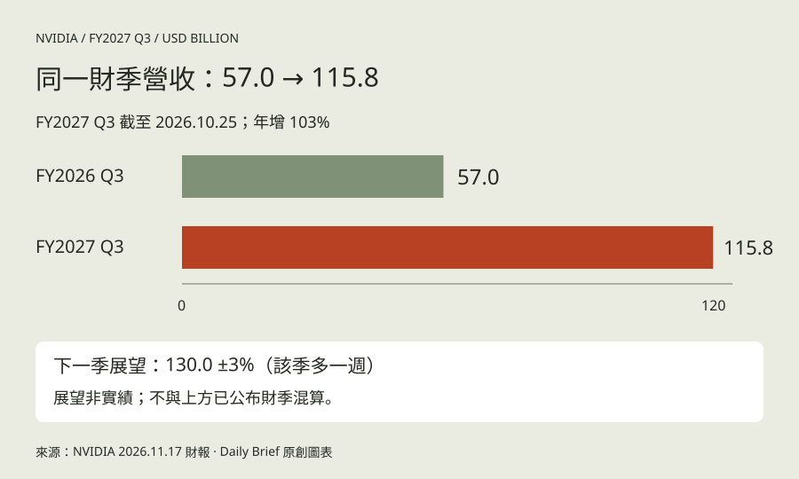

MARKETS / THE ESSENTIALS
NVIDIA 財季營收年增 103%，財報與未來產能承諾分開看
收錄於 2026-11-19 日報 · NVIDIA FY2027 Q3 財報
已確認的重點
- NVIDIA 11 月 17 日公布 FY2027 第三季（截至 10 月 25 日）營收 1,158 億美元，較前季增 20%、年增 103%；資料中心營收 1,076 億美元，年增 110%。GAAP 稀釋每股盈餘為 2.70 美元。
- 公司預估下一季營收 1,300 億美元、上下 3%，且該季多一週，未假設中國資料中心運算營收。展望不是已實現收入，也不能直接等同相同週數的成長比較。
影響與限制
- 同日供應鏈公告提到欣興供 NVIDIA 的 ABF 載板產能計畫增至現有水準 3.5 倍以上，預計 2027 下半年投產、2028 第三季達新增產能目標。這是計畫與承諾，不是本季新增營收。
- 本期採公司原始數據，不稱超越未獨立核對的市場預期，也不把公布後盤中漲跌當成財報品質或投資報酬保證。

原文與查核
以上為整理與解讀，重要細節請回到原文核對。
- NVIDIA FY2027 Q3 財報 ↗發布 2026-11-17 · 查核 2026-11-19T05:04:36+08:00
- NVIDIA 供應鏈承諾公告 ↗發布 2026-11-17 · 查核 2026-11-19T05:04:36+08:00